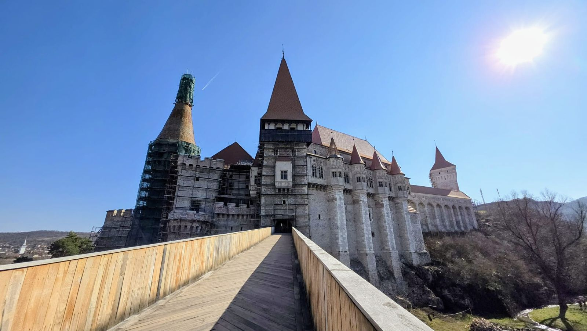
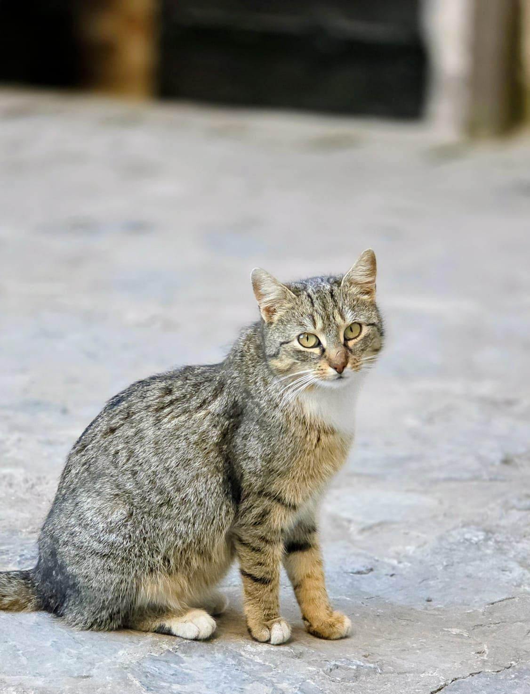

Journey 02 · Hunedoara Note 12 of 12 Reflection
Reflection: Hunedoara
When I first came to Hunedoara, I came for the castle.

Corvin Castle dominates the city in both geography and imagination. It rises above the town like something pulled from a medieval illustration, all towers and bridges and stone walls. It’s easy to understand why it draws visitors here.

But the longer I spent walking around the city, the more I realized that the castle is only one layer of Hunedoara’s story. History here isn’t contained in a single monument. It’s scattered across the town in both expected and unexpected places.
There is the castle, with its legends and larger-than-life histories and heroes. Or villains. Or antiheroes. I am still not entirely sure. There is the visible imprint of the communist era, a period that seems full of contradictions and hard edges. There is the quiet promenade at the end of winter, before spring fully takes hold, where everyday life continues to the sound of church bells and coffee shop conversations.
Individually, none of these places tries to explain the entire history of Hunedoara. But together they form something more interesting: little blocks of story and culture, part of the larger patchwork quilt of Transylvania’s history.
The castle tells stories about kings, power, and war. The museums tell stories about industry, politics, and everyday life. The church is a reminder that tradition here is not just historical, it is still a living part of the city.
What I think Hunedoara gave me, more than anything, was the chance to slow down. I think I usually travel for breadth. I want to see the next thing, and then the next thing after that. I move through places quickly, collecting impressions and landmarks and trying not to miss anything important. I enjoy the sites. I already spend more time than average reading museum plaques and people-watching. But there is usually still a clock in the back of my mind, ticking away and reminding me to move on to the next thing, and then the next.
Here, I had the time to stay with things a little longer. To follow my curiosity. To go into the small museum that did not look particularly impressive from the outside.

To listen to the bells and step into the church. To sit with a legend long enough to want to write my own retelling. To let a room full of toys or banknotes or miniature trains become something more than a quick glance before moving on.
A good deal of my visit to Corvin Castle was spent making friends with the castle cat and coaxing it into my lap where it purred itself to sleep while I petted it, looking out over the town. It made me realize how much I like creating an intention to seek depth.
Not just seeing the major sites but letting a place unfold slowly through its smaller moments. The unexpected, unplanned ones. The ones that would never make it onto a rushed checklist but end up being the parts I remember most clearly later – a cat, a church service, a love story, a legend.
Hunedoara turned out to be much more than a castle stop. It was the place where I got to practice staying put long enough for a town to become more than its headline attraction.
A castle tower rises above the city. A factory gate rusts in the distance. A miniature train circles endlessly through a tiny town. A priest swings incense through a room filled with music. A tourist sits at a cafe with a cappuccino, notebook and pen.
Originally published at fieldnotesfromabroad.com/2026/03/14/reflection-hunedoara/